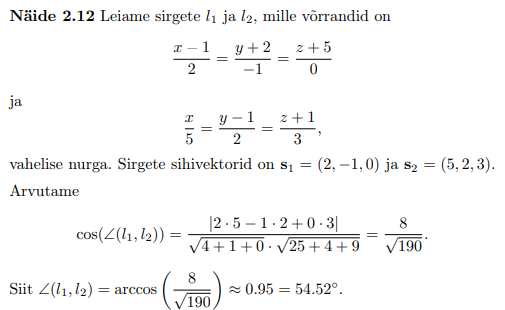
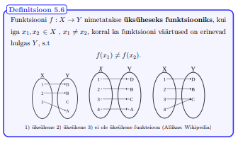

1.KONTROLLTÖÖ MATERJALID
Tagasi
Kalkulaatorid:
Tuletise leidmise kalkulaator
Piirväärtuse leidmise kalkulaator
Kahe tasandi vahelise nurga arvutamise kalkulaator
1) Sirge ja tasand ruumis:
Punkti kaugus sirgest:
Nurk kahe tasandi vahel:
Sirge kanooniline võrrand:
 Tasandi võrrand üldkujul ja normaalvektor:
Tasandi võrrand üldkujul ja normaalvektor:
 Normaalvektori näide:
Tasandi võrrandi leidmine näide:
Normaalvektori näide:
Tasandi võrrandi leidmine näide:

Punkti kaugus tasandist:
Nurk kahe sirge vahel:
Näide:

Järeldused tasandi võrrandist:
2) Kompleksarvud:
Kompleksarvud:
Tehted kompleksarvudega:
 Kompleksarvu trigonomeetriline kuju:
Tehted trigonomeetrilisel kujul antud kompleksarvudega:
Kompleksarvu n-astme juured:
Kompleksarvu eksponentkujd:
Algebraliste võrrandite lahendamisest:
Kompleksarvu trigonomeetriline kuju:
Tehted trigonomeetrilisel kujul antud kompleksarvudega:
Kompleksarvu n-astme juured:
Kompleksarvu eksponentkujd:
Algebraliste võrrandite lahendamisest:

Nurk sirge ja tasandi vahel:
Näide:
3) Funktsioonid:
Funktsiooni määramispiirkond ja muutumispiirkond:
NÄIDE - Funktsiooni määramispiirkond:
NÄIDE - Funktsiooni määramispiirkond:
Paarisfunktsioon ja paaritu funktsioon:
Üksühesus ja pealekujutus:

Liitfunktsioon:
Pöördfunktsioon:
Põhilised elementaarfunktsioonid:

Kasulikud videod: